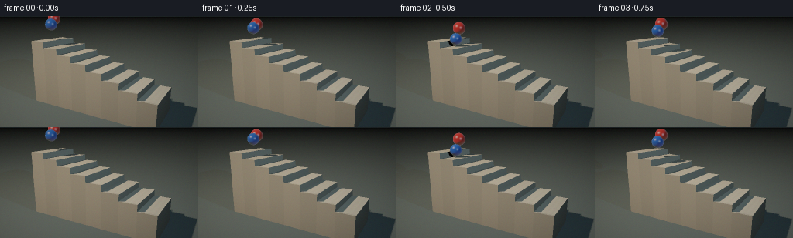
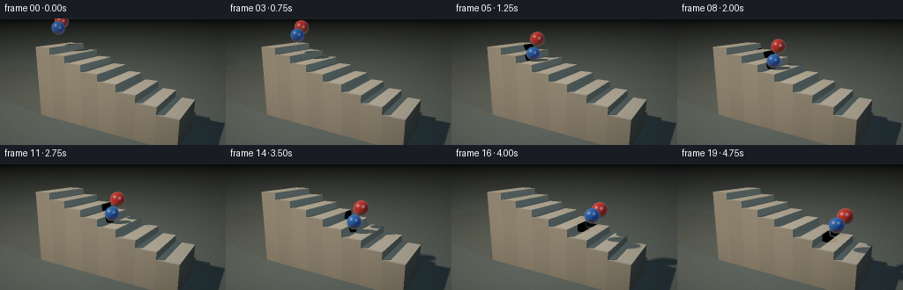

CODING AGENTS AS PIXEL WORLD MODELS
traex/DeepSeek-V4.1-Flash · instance_preservation_0022
点击播放 · 原生 RGB 像素
逐轮保存的候选
回放视频、检查图与代码变化。
每份候选均可单独播放。实际图片检查记录在下方工具轨迹中。
候选 01播放与检查图
点击播放 · 原生 RGB 像素


展开代码变化
--- 上一保存版本
+++ 本次保存版本
@@ -0,0 +1,402 @@
+from pathlib import Path
+
+import numpy as np
+
+from artifact_io import save
+
+
+WIDTH = 256
+HEIGHT = 144
+FRAMES = 20
+FPS = 4.0
+SUPERSAMPLE = 2
+
+CAMERA = np.array([4.8, 3.25, 8.2], dtype=np.float64)
+TARGET = np.array([0.0, 0.72, 0.0], dtype=np.float64)
+FOV_DEGREES = 30.0
+
+STAIR_X0 = -3.12
+STEP_WIDTH = 0.78
+STEP_COUNT = 8
+TOP_HEIGHT = 2.10
+RISER_HEIGHT = 0.28
+STAIR_Z0 = -1.15
+STAIR_Z1 = 1.15
+FLOOR_Y = -1.0
+
+KEY_LIGHT = np.array([-3.8, 7.2, 4.7], dtype=np.float64)
+FILL_LIGHT = np.array([4.2, 4.3, 2.2], dtype=np.float64)
+
+
+def normalize(vector):
+ return vector / np.linalg.norm(vector, axis=-1, keepdims=True)
+
+
+def step_height(x):
+ index = np.floor((x - STAIR_X0) / STEP_WIDTH).astype(np.int32)
+ index = np.clip(index, 0, STEP_COUNT - 1)
+ return TOP_HEIGHT - RISER_HEIGHT * index
+
+
+def simulate_ball(start_x, velocity_x, start_z, radius, start_lift, vertical_velocity):
+ dt = 1.0 / 240.0
+ total_time = FRAMES / FPS
+ substeps = int(np.ceil(total_time / dt))
+ positions = np.empty((substeps + 1, 3), dtype=np.float64)
+
+ x = start_x
+ z = start_z
+ y = step_height(x) + radius + start_lift
+ vy = vertical_velocity
+ positions[0] = (x, y, z)
+
+ gravity = 8.4
+ restitution = 0.78
+ for index in range(1, substeps + 1):
+ x += velocity_x * dt
+ y += vy * dt
+ vy -= gravity * dt
+
+ ground = step_height(x) + radius
+ if y < ground and vy < 0.0:
+ y = ground
+ vy = -vy * restitution
+ if vy < 0.16:
+ vy = 0.0
+
+ z += 0.018 * np.sin(index * dt * 2.1 + start_z * 7.0) * dt
+ positions[index] = (x, y, z)
+
+ sample_times = np.arange(FRAMES, dtype=np.float64) / FPS
+ sample_indices = np.minimum((sample_times / dt).round().astype(np.int32), substeps)
+ return positions[sample_indices]
+
+
+RED_POSITIONS = simulate_ball(
+ start_x=-2.92,
+ velocity_x=1.08,
+ start_z=-0.32,
+ radius=0.32,
+ start_lift=0.72,
+ vertical_velocity=-0.15,
+)
+BLUE_POSITIONS = simulate_ball(
+ start_x=-2.54,
+ velocity_x=0.98,
+ start_z=0.34,
+ radius=0.285,
+ start_lift=0.48,
+ vertical_velocity=0.35,
+)
+
+
+def camera_rays(width, height):
+ forward = normalize(TARGET - CAMERA)
+ right = normalize(np.cross(forward, np.array([0.0, 1.0, 0.0])))
+ up = normalize(np.cross(right, forward))
+
+ aspect = width / height
+ tan_half = np.tan(np.deg2rad(FOV_DEGREES) * 0.5)
+ xs = (2.0 * (np.arange(width) + 0.5) / width - 1.0) * aspect * tan_half
+ ys = (1.0 - 2.0 * (np.arange(height) + 0.5) / height) * tan_half
+ grid_x, grid_y = np.meshgrid(xs, ys)
+ directions = (
+ forward[None, None, :]
+ + grid_x[:, :, None] * right[None, None, :]
+ + grid_y[:, :, None] * up[None, None, :]
+ )
+ return normalize(directions)
+
+
+def intersect_boxes(origin, directions, boxes):
+ count = directions.shape[0]
+ nearest = np.full(count, np.inf, dtype=np.float64)
+ normal = np.zeros((count, 3), dtype=np.float64)
+ object_id = np.full(count, -1, dtype=np.int32)
+
+ for box_index, (x0, x1, y0, y1, z0, z1) in enumerate(boxes):
+ tx0 = (x0 - origin[0]) / directions[:, 0]
+ tx1 = (x1 - origin[0]) / directions[:, 0]
+ ty0 = (y0 - origin[1]) / directions[:, 1]
+ ty1 = (y1 - origin[1]) / directions[:, 1]
+ tz0 = (z0 - origin[2]) / directions[:, 2]
+ tz1 = (z1 - origin[2]) / directions[:, 2]
+
+ tx_near, tx_far = np.minimum(tx0, tx1), np.maximum(tx0, tx1)
+ ty_near, ty_far = np.minimum(ty0, ty1), np.maximum(ty0, ty1)
+ tz_near, tz_far = np.minimum(tz0, tz1), np.maximum(tz0, tz1)
+
+ t_near = np.maximum(np.maximum(tx_near, ty_near), tz_near)
+ t_far = np.minimum(np.minimum(tx_far, ty_far), tz_far)
+ hit = (t_far >= np.maximum(t_near, 1e-5)) & (t_near > 1e-5) & (t_near < nearest)
+ if not np.any(hit):
+ continue
+
+ axis = np.argmax(
+ np.stack(
+ [
+ np.where(tx_near == t_near, 1, 0),
+ np.where(ty_near == t_near, 1, 0),
+ np.where(tz_near == t_near, 1, 0),
+ ],
+ axis=1,
+ ),
+ axis=1,
+ )
+ box_normals = np.zeros((count, 3), dtype=np.float64)
+ for axis_index in range(3):
+ axis_mask = hit & (axis == axis_index)
+ box_normals[axis_mask, axis_index] = -np.sign(directions[axis_mask, axis_index])
+
+ nearest[hit] = t_near[hit]
+ normal[hit] = box_normals[hit]
+ object_id[hit] = box_index
+
+ return nearest, normal, object_id
+
+
+def intersect_spheres(origin, directions, nearest, normal, object_id, spheres):
+ for sphere_index, (center, radius) in enumerate(spheres):
+ offset = origin - center
+ a = np.sum(directions * directions, axis=1)
+ b = 2.0 * (directions @ offset)
+ c = float(offset @ offset - radius * radius)
+ discriminant = b * b - 4.0 * a * c
+ valid = discriminant > 0.0
+ root = np.sqrt(np.maximum(discriminant, 0.0))
+ distance = (-b - root) / (2.0 * a)
+ hit = valid & (distance > 1e-5) & (distance < nearest)
+ if not np.any(hit):
+ continue
+
+ points = origin + directions[hit] * distance[hit, None]
+ nearest[hit] = distance[hit]
+ normal[hit] = (points - center) / radius
+ object_id[hit] = STEP_COUNT + sphere_index
+
+ return nearest, normal, object_id
+
+
+def occluded(points, light_position, boxes, spheres):
+ to_light = light_position[None, :] - points
+ distance = np.linalg.norm(to_light, axis=1)
+ directions = to_light / distance[:, None]
+ shadow = np.zeros(points.shape[0], dtype=bool)
+
+ for x0, x1, y0, y1, z0, z1 in boxes:
+ tx0 = (x0 - points[:, 0]) / directions[:, 0]
+ tx1 = (x1 - points[:, 0]) / directions[:, 0]
+ ty0 = (y0 - points[:, 1]) / directions[:, 1]
+ ty1 = (y1 - points[:, 1]) / directions[:, 1]
+ tz0 = (z0 - points[:, 2]) / directions[:, 2]
+ tz1 = (z1 - points[:, 2]) / directions[:, 2]
+
+ tx_near, tx_far = np.minimum(tx0, tx1), np.maximum(tx0, tx1)
+ ty_near, ty_far = np.minimum(ty0, ty1), np.maximum(ty0, ty1)
+ tz_near, tz_far = np.minimum(tz0, tz1), np.maximum(tz0, tz1)
+ t_near = np.maximum(np.maximum(tx_near, ty_near), tz_near)
+ t_far = np.minimum(np.minimum(tx_far, ty_far), tz_far)
+ shadow |= (t_far >= np.maximum(t_near, 1e-4)) & (t_near < distance - 1e-4)
+
+ for center, radius in spheres:
+ offset = points - center
+ b = 2.0 * np.sum(directions * offset, axis=1)
+ c = np.sum(offset * offset, axis=1) - radius * radius
+ discriminant = b * b - 4.0 * c
+ valid = discriminant > 0.0
+ root = np.sqrt(np.maximum(discriminant, 0.0))
+ distance_hit = (-b - root) * 0.5
+ shadow |= valid & (distance_hit > 1e-4) & (distance_hit < distance - 1e-4)
+
+ return shadow
+
+
+def tone_map(color):
+ color = np.maximum(color, 0.0)
+ mapped = color / (1.0 + color)
+ mapped = np.power(mapped, 1.0 / 2.2)
+ return mapped
+
+
+def render_frame(frame_index):
+ render_width = WIDTH * SUPERSAMPLE
+ render_height = HEIGHT * SUPERSAMPLE
+ directions = camera_rays(render_width, render_height).reshape(-1, 3)
+ origin = CAMERA
+
+ boxes = []
+ for index in range(STEP_COUNT):
+ x0 = STAIR_X0 + index * STEP_WIDTH
+ x1 = x0 + STEP_WIDTH
+ height = TOP_HEIGHT - index * RISER_HEIGHT
+ boxes.append((x0, x1, FLOOR_Y, height, STAIR_Z0, STAIR_Z1))
+
+ red_center = RED_POSITIONS[frame_index]
+ blue_center = BLUE_POSITIONS[frame_index]
+ spheres = [(red_center, 0.32), (blue_center, 0.285)]
+
+ nearest, normals, object_id = intersect_boxes(origin, directions, boxes)
+ nearest, normals, object_id = intersect_spheres(
+ origin, directions, nearest, normals, object_id, spheres
+ )
+
+ floor_distance = (FLOOR_Y - origin[1]) / directions[:, 1]
+ floor_hit = (floor_distance > 1e-5) & (floor_distance < nearest)
+ nearest[floor_hit] = floor_distance[floor_hit]
+ normals[floor_hit] = np.array([0.0, 1.0, 0.0])
+ object_id[floor_hit] = STEP_COUNT + 2
+
+ sky_top = np.array([0.018, 0.055, 0.070])
+ sky_bottom = np.array([0.060, 0.075, 0.076])
+ blend = np.clip(directions[:, 1] * 2.2 + 0.48, 0.0, 1.0)[:, None]
+ background = sky_bottom[None, :] * (1.0 - blend) + sky_top[None, :] * blend
+
+ points = origin[None, :] + directions * nearest[:, None]
+ view = -directions
+ color = background.copy()
+ hit_mask = np.isfinite(nearest)
+
+ albedo = np.zeros_like(color)
+ shininess = np.full(directions.shape[0], 24.0)
+ specular_strength = np.full(directions.shape[0], 0.10)
+
+ for index in range(STEP_COUNT):
+ mask = hit_mask & (object_id == index)
+ if not np.any(mask):
+ continue
+ warm_a = np.array([0.62, 0.57, 0.46])
+ warm_b = np.array([0.57, 0.53, 0.43])
+ base = warm_a if index % 2 == 0 else warm_b
+ albedo[mask] = base
+ specular_strength[mask] = 0.08
+
+ red_mask = hit_mask & (object_id == STEP_COUNT)
+ blue_mask = hit_mask & (object_id == STEP_COUNT + 1)
+ floor_mask = hit_mask & (object_id == STEP_COUNT + 2)
+ albedo[red_mask] = np.array([0.78, 0.025, 0.018])
+ albedo[blue_mask] = np.array([0.015, 0.13, 0.72])
+ albedo[floor_mask] = np.array([0.095, 0.125, 0.125])
+ shininess[red_mask | blue_mask] = 86.0
+ shininess[floor_mask] = 28.0
+ specular_strength[red_mask | blue_mask] = 0.72
+ specular_strength[floor_mask] = 0.20
+
+ stair_mask = hit_mask & (object_id < STEP_COUNT)
+ top_mask = stair_mask & (normals[:, 1] > 0.5)
+ texture = (
+ 0.965
+ + 0.025 * np.sin(points[:, 0] * 29.0)
+ + 0.015 * np.sin(points[:, 2] * 41.0 + points[:, 0] * 11.0)
+ )
+ albedo[top_mask] *= texture[top_mask, None]
+ nosing = top_mask & (points[:, 2] > 1.055)
+ albedo[nosing] *= 0.80
+
+ stair_side = stair_mask & ~top_mask
+ albedo[stair_side] *= 0.86
+
+ ambient = 0.24 + 0.13 * np.clip(normals[:, 1], 0.0, 1.0)
+ ambient_color = np.array([0.62, 0.74, 0.78])
+ color[hit_mask] = (
+ albedo[hit_mask] * ambient[hit_mask, None] * ambient_color[None, :]
+ )
+
+ lit_indices = np.flatnonzero(hit_mask)
+ lit_points = points[lit_indices]
+ lit_normals = normals[lit_indices]
+ lit_view = view[lit_indices]
+
+ key_offsets = [
+ np.array([-0.20, 0.12, -0.10]),
+ np.array([0.18, -0.08, 0.13]),
+ ]
+ key_visibility = np.zeros(lit_indices.size, dtype=np.float64)
+ for offset in key_offsets:
+ key_visibility += (~occluded(lit_points, KEY_LIGHT + offset, boxes, spheres)).astype(
+ np.float64
+ )
+ key_visibility /= len(key_offsets)
+
+ key_direction = normalize(KEY_LIGHT[None, :] - lit_points)
+ fill_direction = normalize(FILL_LIGHT[None, :] - lit_points)
+ key_diffuse = np.clip(np.sum(lit_normals * key_direction, axis=1), 0.0, 1.0)
+ fill_diffuse = np.clip(np.sum(lit_normals * fill_direction, axis=1), 0.0, 1.0)
+ fill_visibility = (~occluded(lit_points, FILL_LIGHT, boxes, spheres)).astype(np.float64)
+
+ lit_albedo = albedo[lit_indices]
+ key_color = np.array([1.00, 0.82, 0.62])
+ fill_color = np.array([0.44, 0.67, 0.82])
+ lit_color = (
+ lit_albedo
+ * (
+ key_diffuse[:, None] * key_visibility[:, None] * 1.58 * key_color[None, :]
+ + fill_diffuse[:, None] * fill_visibility[:, None] * 0.42 * fill_color[None, :]
+ )
+ )
+
+ half_key = normalize(key_direction + lit_view)
+ half_fill = normalize(fill_direction + lit_view)
+ key_spec = np.power(
+ np.clip(np.sum(lit_normals * half_key, axis=1), 0.0, 1.0),
+ shininess[lit_indices],
+ )
+ fill_spec = np.power(
+ np.clip(np.sum(lit_normals * half_fill, axis=1), 0.0, 1.0),
+ shininess[lit_indices],
+ )
+ lit_color += (
+ key_spec[:, None]
+ * key_visibility[:, None]
+ * specular_strength[lit_indices, None]
+ * np.array([1.00, 0.90, 0.76])[None, :]
+ )
+ lit_color += (
+ fill_spec[:, None]
+ * fill_visibility[:, None]
+ * specular_strength[lit_indices, None]
+ * 0.55
+ * np.array([0.55, 0.78, 0.95])[None, :]
+ )
+
+ fresnel = np.power(
+ 1.0 - np.clip(np.sum(lit_normals * lit_view, axis=1), 0.0, 1.0), 3.0
+ )
+ ball_mask = (object_id[lit_indices] == STEP_COUNT) | (
+ object_id[lit_indices] == STEP_COUNT + 1
+ )
+ lit_color += (
+ fresnel[:, None]
+ * ball_mask[:, None]
+ * np.array([0.12, 0.18, 0.20])[None, :]
+ )
+ color[lit_indices] = lit_color
+
+ # A faint warm bounce from the staircase fills the lower hemisphere.
+ floor_bounce = np.clip(-normals[:, 1], 0.0, 1.0)[:, None] * np.array(
+ [0.050, 0.035, 0.020]
+ )[None, :]
+ color[hit_mask] += floor_bounce[hit_mask]
+
+ color = tone_map(color.reshape(render_height, render_width, 3))
+ color = color.reshape(HEIGHT, SUPERSAMPLE, WIDTH, SUPERSAMPLE, 3).mean(axis=(1, 3))
+
+ yy, xx = np.mgrid[0:HEIGHT, 0:WIDTH]
+ vignette = 1.0 - 0.22 * (
+ ((xx - WIDTH * 0.5) / (WIDTH * 0.5)) ** 2
+ + ((yy - HEIGHT * 0.5) / (HEIGHT * 0.5)) ** 2
+ ) * 0.5
+ color *= vignette[:, :, None]
+
+ rng = np.random.default_rng(7301 + frame_index)
+ color += rng.normal(0.0, 0.0045, color.shape)
+ return np.clip(color * 255.0 + 0.5, 0, 255).astype(np.uint8)
+
+
+def main():
+ frames = np.stack([render_frame(index) for index in range(FRAMES)])
+ save(frames, Path(__file__).resolve().parent)
+ print(f"Saved {FRAMES} frames at {WIDTH}x{HEIGHT}, {FPS:g} fps")
+
+
+if __name__ == "__main__":
+ main()
候选 02播放与检查图
点击播放 · 原生 RGB 像素

展开代码变化
--- 上一保存版本
+++ 本次保存版本
@@ -12,7 +12,7 @@
SUPERSAMPLE = 2
CAMERA = np.array([4.8, 3.25, 8.2], dtype=np.float64)
-TARGET = np.array([0.0, 0.72, 0.0], dtype=np.float64)
+TARGET = np.array([0.0, 0.98, 0.0], dtype=np.float64)
FOV_DEGREES = 30.0
STAIR_X0 = -3.12
@@ -196,7 +196,11 @@
tz_near, tz_far = np.minimum(tz0, tz1), np.maximum(tz0, tz1)
t_near = np.maximum(np.maximum(tx_near, ty_near), tz_near)
t_far = np.minimum(np.minimum(tx_far, ty_far), tz_far)
- shadow |= (t_far >= np.maximum(t_near, 1e-4)) & (t_near < distance - 1e-4)
+ shadow |= (
+ (t_near > 1e-4)
+ & (t_far >= t_near)
+ & (t_near < distance - 1e-4)
+ )
for center, radius in spheres:
offset = points - center
@@ -283,10 +287,12 @@
stair_mask = hit_mask & (object_id < STEP_COUNT)
top_mask = stair_mask & (normals[:, 1] > 0.5)
- texture = (
+ texture = np.ones(directions.shape[0], dtype=np.float64)
+ texture[top_mask] = (
0.965
- + 0.025 * np.sin(points[:, 0] * 29.0)
- + 0.015 * np.sin(points[:, 2] * 41.0 + points[:, 0] * 11.0)
+ + 0.025 * np.sin(points[top_mask, 0] * 29.0)
+ + 0.015
+ * np.sin(points[top_mask, 2] * 41.0 + points[top_mask, 0] * 11.0)
)
albedo[top_mask] *= texture[top_mask, None]
nosing = top_mask & (points[:, 2] > 1.055)
@@ -369,6 +375,10 @@
* ball_mask[:, None]
* np.array([0.12, 0.18, 0.20])[None, :]
)
+
+ # Soft downward-facing shading makes the risers and contact areas legible.
+ contact_ao = 1.0 - 0.16 * np.clip(0.55 - lit_points[:, 1], 0.0, 0.55)
+ lit_color *= contact_ao[:, None]
color[lit_indices] = lit_color
# A faint warm bounce from the staircase fills the lower hemisphere.
候选 03播放与检查图
可观测工具轨迹
实际执行的命令与返回图片。
命令 1exit 0
/bin/bash -c "sed -n '1,240p' prompt.txt"
命令 2exit 0
/bin/bash -c "sed -n '1,280p' GENERATION_RULES.md"
命令 3exit 0
/bin/bash -c 'cat task_spec.json'
命令 4exit 0
/bin/bash -c "printf '%s\\n' '--- files ---'; rg --files -g '"'!*.pyc'"' -g '"'!__pycache__'"' | sed -n '1,240p'; printf '%s\\n' '--- top-level ---'; ls -la"
命令 5exit 0
/bin/bash -c "sed -n '1,280p' artifact_io.py"
命令 6exit 0
/bin/bash -c "sed -n '1,260p' player_template.html"
命令 7exit 0
/bin/bash -c "python - <<'PY'
import numpy, PIL
print('numpy', numpy.__version__)
print('PIL', PIL.__version__)
PY"命令 8exit 0
/bin/bash -c 'python generate.py'
命令 9exit 0
/bin/bash -c "python - <<'PY'
from PIL import Image
import numpy as np
from pathlib import Path
for idx in [0,5,10,15,19]:
a=np.array(Image.open(f'frames/{idx:02d}.png'))
red=(a[:,:,0]>a[:,:,1]*1.7)&(a[:,:,0]>a[:,:,2]*1.4)&(a[:,:,0]>70)
blue=(a[:,:,2]>a[:,:,0]*1.35)&(a[:,:,2]>a[:,:,1]*1.15)&(a[:,:,2]>60)
print(idx, 'mean',a.mean((0,1)).round(1), 'redpx',red.sum(), 'bluepx',blue.sum(),
'redbox', (np.where(red)[1].min(),np.where(red)[0].min(),np.where(red)[1].max(),np.where(red)[0].max()) if red.any() else None,
'bluebox', (np.where(blue)[1].min(),np.where(blue)[0].min(),np.where(blue)[1].max(),np.where(blue)[0].max()) if blue.any() else None)
PY"命令 10exit 0
/bin/bash -c "python - <<'PY'
from PIL import Image
import numpy as np
chars=' .:-=+*#%@'
for idx in [0,10,19]:
a=np.array(Image.open(f'frames/{idx:02d}.png')).astype(float)
red=(a[:,:,0]>a[:,:,1]*1.7)&(a[:,:,0]>a[:,:,2]*1.4)&(a[:,:,0]>70)
blue=(a[:,:,2]>a[:,:,0]*1.35)&(a[:,:,2]>a[:,:,1]*1.15)&(a[:,:,2]>60)
lum=a.mean(2)
print('\\nFRAME',idx)
for y in range(0,144,4):
row=''
for x in range(0,256,4):
rr=red[y:y+4,x:x+4].mean(); bb=blue[y:y+4,x:x+4].mean(); l=lum[y:y+4,x:x+4].mean()
row += 'R' if rr>.30 else ('B' if bb>.30 else chars[min(9,int(l/256*10))])
print(row)
PY"命令 11exit 0
/bin/bash -c "python - <<'PY'
import generate as g
import numpy as np
print('red positions')
print(np.round(g.RED_POSITIONS,3))
print('blue positions')
print(np.round(g.BLUE_POSITIONS,3))
# projected centers
f=g.normalize(g.TARGET-g.CAMERA); r=g.normalize(np.cross(f,np.array([0.,1.,0.]))); u=g.normalize(np.cross(r,f))
t=np.tan(np.deg2rad(g.FOV_DEGREES)/2)
for name, ps in [('red',g.RED_POSITIONS),('blue',g.BLUE_POSITIONS)]:
out=[]
for p in ps:
d=p-g.CAMERA; z=d@f; sx=(d@r)/(z*t*(g.WIDTH/g.HEIGHT)); sy=(d@u)/(z*t)
out.append((round((sx+1)*g.WIDTH/2,1),round((1-sy)*g.HEIGHT/2,1)))
print(name,out)
PY"命令 12exit 0
/bin/bash -c 'command -v ffmpeg || true; command -v magick || true; command -v montage || true'
命令 13exit 0
/bin/bash -c 'python generate.py'
命令 14exit 0
/bin/bash -c "python - <<'PY'
from PIL import Image
import numpy as np
chars=' .:-=+*#%@'
for idx in [0,5,10,15,19]:
a=np.array(Image.open(f'frames/{idx:02d}.png')).astype(float)
red=(a[:,:,0]>a[:,:,1]*1.7)&(a[:,:,0]>a[:,:,2]*1.4)&(a[:,:,0]>70)
blue=(a[:,:,2]>a[:,:,0]*1.35)&(a[:,:,2]>a[:,:,1]*1.15)&(a[:,:,2]>60)
lum=a.mean(2)
print('\\nFRAME',idx,'mean',a.mean((0,1)).round(1),'red',red.sum(),'blue',blue.sum())
for y in range(0,144,4):
row=''
for x in range(0,256,4):
rr=red[y:y+4,x:x+4].mean(); bb=blue[y:y+4,x:x+4].mean(); l=lum[y:y+4,x:x+4].mean()
row += 'R' if rr>.30 else ('B' if bb>.30 else chars[min(9,int(l/256*10))])
print(row)
PY"命令 15exit 0
/bin/bash -c "python - <<'PY'
from PIL import Image
import numpy as np
from pathlib import Path
files=sorted(Path('frames').glob('*.png'))
assert len(files)==20, len(files)
frames=[]
for i,p in enumerate(files):
a=np.array(Image.open(p).convert('RGB'))
assert a.shape==(144,256,3), (p,a.shape)
frames.append(a)
red=(a[:,:,0].astype(int)>a[:,:,1].astype(int)*1.7)&(a[:,:,0].astype(int)>a[:,:,2].astype(int)*1.4)&(a[:,:,0]>70)
blue=(a[:,:,2].astype(int)>a[:,:,0].astype(int)*1.35)&(a[:,:,2].astype(int)>a[:,:,1].astype(int)*1.15)&(a[:,:,2]>60)
print(f'{i:02d} red={red.sum():3d} blue={blue.sum():3d} mean={a.mean():.2f}')
assert all(((a[:,:,0].astype(int)>a[:,:,1].astype(int)*1.7)&(a[:,:,0].astype(int)>a[:,:,2].astype(int)*1.4)&(a[:,:,0]>70)).sum()>40 for a in frames)
assert all(((a[:,:,2].astype(int)>a[:,:,0].astype(int)*1.35)&(a[:,:,2].astype(int)>a[:,:,1].astype(int)*1.15)&(a[:,:,2]>60)).sum()>40 for a in frames)
mae=[np.abs(frames[i].astype(int)-frames[i-1].astype(int)).mean() for i in range(1,20)]
print('transition MAE min/mean/max', round(min(mae),2), round(float(np.mean(mae)),2), round(max(mae),2))
print('outputs:', [(p.name,p.stat().st_size) for p in [Path('pixels.npz'),Path('index.html'),Path('inspection.png')]])
PY
node - <<'JS'
const fs=require('fs');
const html=fs.readFileSync('index.html','utf8');
if("'!html.includes('"'window.__pixelReady')) throw Error('player missing');
if("'!html.includes('"'\"frames\":20')) throw Error('frame metadata missing');
console.log('player payload: ok,',html.length,'bytes');
JS"命令 16exit 0
/bin/bash -c "python - <<'PY'
from PIL import Image
import numpy as np
for i in range(20):
a=np.array(Image.open(f'frames/{i:02d}.png')).astype(int)
red=(a[:,:,0]>a[:,:,1]*1.7)&(a[:,:,0]>a[:,:,2]*1.4)&(a[:,:,0]>70)
blue=(a[:,:,2]>a[:,:,0]*1.35)&(a[:,:,2]>a[:,:,1]*1.15)&(a[:,:,2]>60)
rb=(np.where(red)[1].min(),np.where(red)[0].min(),np.where(red)[1].max(),np.where(red)[0].max())
bb=(np.where(blue)[1].min(),np.where(blue)[0].min(),np.where(blue)[1].max(),np.where(blue)[0].max())
rmean=a[red].mean(0).round(1); bmean=a[blue].mean(0).round(1)
print(f'{i:02d} R{rb} rgb{tuple(rmean)} B{bb} rgb{tuple(bmean)}')
PY"保存候选 3 份；完成命令 16 次；可验证图片返回 0 张。原始 API 响应与完整日志保留在本地。